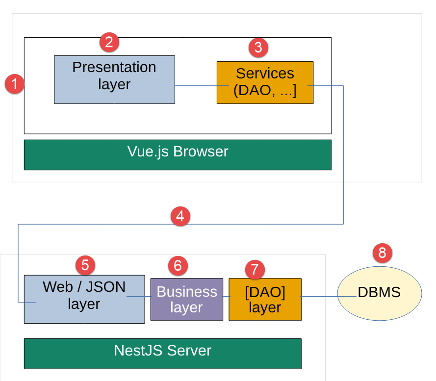
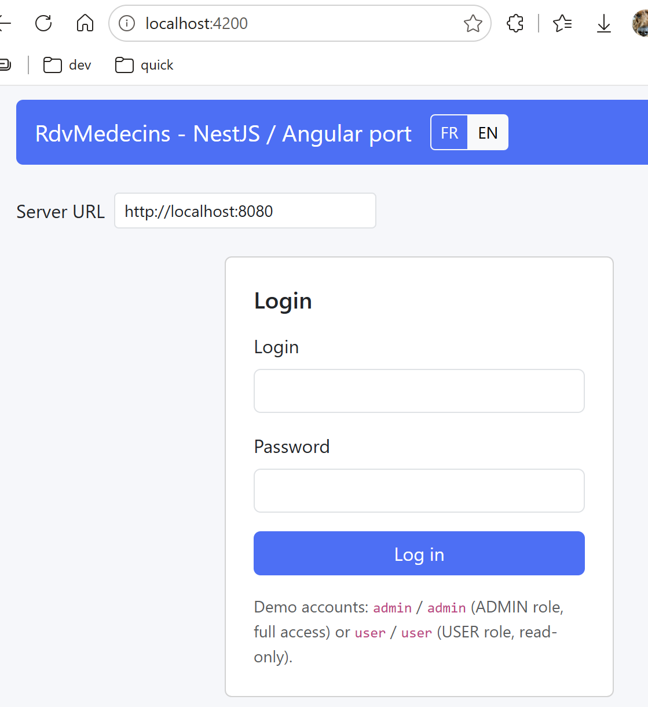

1. Introducción
El PDF del documento está |AQUÍ|.
Los códigos del documento están |AQUÍ|.
Este documento es un producto de Claude, la IA de Anthropic. Su propósito es transponer el documento [Un ejemplo cliente/servidor - AngularJS 1.x / Spring 4] de dos maneras:
- el cliente AngularJS 1.x se reemplaza por un cliente [Vue.js] 3;
- el framework web Java Spring MVC se reemplaza por el framework web NestJS;
Claude de Anthropic (IA) hizo la mayor parte del trabajo (90 %):
- Generación del código: Claude generó todo el código. Yo me limité a probarlo siguiendo el curso generado;
- Generación del curso en formato ODT: Claude generó varias versiones a petición mía. Aquí fue donde participé principalmente.
Nota 1: Si el objetivo principal del lector es «aprender NestJS», hay un ejemplo más sencillo en el documento [Introducción al lenguaje TypeScript y al framework web NestJS mediante ejemplos]. Después, el lector puede volver a este documento para comprender el framework cliente Vue.js.
Nota 2: Este documento hace referencia con frecuencia a la versión [React] de este curso. Se trata del curso [A Client/Server Example - React / NestJS (2026)]. Además, también se menciona la versión [Angular] de este curso: [Un ejemplo cliente/servidor - Angular / NestJS (2026)]
Serge Tahé, septiembre de 2026
==
Este documento es la continuación del curso «Un ejemplo cliente/servidor - AngularJS 1.x / Spring 4,» escrito en 2014. Ese documento original construía una pequeña aplicación para la gestión de citas médicas («[RdvMedecins]») con un servidor Spring 4 / Spring Data / Spring MVC y un cliente AngularJS 1.x.
Doce años después, los dos frameworks utilizados han evolucionado de manera considerable, o incluso han sido reemplazados en el uso habitual:
- del lado del servidor, [NestJS] se ha consolidado como uno de los frameworks Node.js/TypeScript más utilizados para construir aplicaciones web estructuradas, con una filosofía similar a la de Spring (módulos, controladores, servicios, inyección de dependencias) pero dentro del ecosistema JavaScript/TypeScript;
- del lado del cliente, AngularJS 1.x fue reescrito por completo a partir de 2016 con el nombre de [Angular] (2, 4, 5… hasta la versión 22), que es el enfoque adoptado por la variante [Angular] / [NestJS] de este curso. Este documento adopta un enfoque distinto: [Vue.js] (creado por Evan You en 2014, tras una experiencia en Google con AngularJS), un framework «progresivo» : un núcleo centrado en la capa de vista, complementado con su propio formato de componentes, los archivos .vue (véase el capítulo 4).
El objetivo de este documento es retomar el caso de estudio original (la misma aplicación, las mismas funcionalidades, la misma base de datos) y reconstruirlo con herramientas actuales, manteniendo en lo posible la misma progresión pedagógica del documento de 2014.
1.1. Una reconstrucción paso a paso
El documento original tenía unas 300 páginas y cubría, además de la funcionalidad central de la aplicación (autenticación basada en roles con Spring Security), doce ejemplos progresivos para aprender AngularJS 1.x paso a paso. Reconstruir todo ese contenido de una sola vez sería a la vez largo y difícil de asimilar.
Por ello, este documento cubre los dos primeros pasos de la reconstrucción:
- la arquitectura general de la aplicación (sin cambios en su principio);
- la base de datos (sin cambios, salvo por la adición de la tabla [users]);
- el servidor [NestJS] completo, con todas las funcionalidades de consulta y de reserva/cancelación de citas;
- la autenticación basada en tokens (JWT) y el control de acceso basado en roles (ADMIN/USER), equivalente a la capa Spring Security del documento original;
- el cliente [Vue.js] correspondiente, con las mismas funcionalidades, una pantalla de inicio de sesión, una interfaz Bootstrap adaptada al rol del usuario conectado y la posibilidad de cambiar la interfaz entre francés e inglés ([vue-i18n]).
Dos funcionalidades del documento original quedan, por el momento, fuera de este documento: el modo «debug» del cliente original (visualización de la plantilla sin procesar de la vista actual), que se ha omitido deliberadamente en esta adaptación (véase el capítulo 6 para conocer los motivos de esta decisión), y la configuración de un retraso de red artificial, que se ha pospuesto para una etapa posterior.
1.2. A quién va dirigido este documento
Este documento no supone ningún conocimiento previo de [NestJS] ni de [Vue.js]. Cada concepto nuevo (decorador, inyección de dependencias, componente, signal, etc.) se explica a medida que aparece, con el mayor detalle posible, incluso para quienes nunca han escrito una sola línea de TypeScript.
Sin embargo, algunos conocimientos básicos resultan útiles para aprovechar al máximo este documento:
- una comprensión básica del lenguaje JavaScript (variables, funciones, arreglos, objetos);
- una comprensión básica de los intercambios de datos HTTP en una aplicación web (métodos GET/POST, formato JSON);
- las etiquetas más comunes del lenguaje HTML;
- el uso de la línea de comandos (cd, npm install…).
No es necesario conocer de antemano el lenguaje TypeScript (utilizado tanto en el servidor como en el cliente): es un superconjunto de JavaScript que añade un sistema de tipos, el cual se explica a lo largo del documento cada vez que se utiliza. Los lectores interesados pueden consultar el documento [Introduction to the TypeScript Language and the NestJS Framework (2026)], que explica TypeScript en detalle.
1.3. La arquitectura de la aplicación
La arquitectura general de la aplicación no ha cambiado desde el documento original:
- un servidor web entrega un único conjunto HTML/CSS/JS, que contiene una aplicación [Vue.js] construida sobre el modelo de componentes (vista + lógica asociada), que se apoya en servicios para comunicarse con el servidor;
- el usuario interactúa con las vistas mostradas en el navegador. Las acciones del usuario requieren a veces una solicitud al servidor [NestJS], que procesa la solicitud y devuelve una respuesta JSON (JavaScript Object Notation); esta respuesta se utiliza para actualizar la vista presentada al usuario.
La aplicación considerada tendrá la siguiente arquitectura:

- En [1], el usuario de la aplicación [Vue.js] consulta las capas [presentation] y [2] de esa aplicación;
- para realizar la acción solicitada por el usuario, las capas [presentation] y [2] pueden consultar las capas [Services] y [3];
- Para prestar el servicio solicitado, la capa [3] puede necesitar consultar el servidor JSON remoto, implementado por [NestJS], a través de [4];
- Según la solicitud recibida en [5], pueden consultarse las capas [6-8];
- la respuesta del servidor recorre las capas [2-8] en orden inverso;
- La vista mostrada al usuario, [1], refleja esta respuesta;
Nota: Si la arquitectura del proyecto le resulta confusa, vuelva a consultar este diagrama. Tenga en cuenta que el SGBD lo procesa el servidor, no el cliente.
1.4. Herramientas utilizadas
Este documento utiliza las siguientes herramientas (su instalación se detalla en el capítulo 2):
- Node.js (versión 22 o posterior) y su administrador de paquetes npm, el equivalente, dentro del ecosistema JavaScript, de lo que eran Java + Maven para el servidor Spring original;
- Visual Studio Code, un editor de código gratuito, con sus extensiones para TypeScript, el equivalente de Spring Tool Suite (STS) y WebStorm utilizados en el documento original;
- CLI de [NestJS] ([@nestjs/cli]), una herramienta de línea de comandos que genera la estructura del proyecto del servidor y lanza su servidor de desarrollo; del lado del cliente, [Vite] no requiere ninguna instalación global: se puede usar directamente mediante npm en el proyecto incluido con este documento;
- [MySQL] 8 para la base de datos (el documento original utilizaba [MySQL] 5; el esquema relacional en sí no cambia);
- Postman (u otro cliente HTTP), para probar las URL del servidor que responden a solicitudes POST (/addAppointment, /deleteAppointment); un navegador solo puede probar solicitudes GET.
1.5. Funcionalidades de la aplicación
Las funcionalidades «de negocio» de la aplicación [RdvMedecins] permanecen sin cambios respecto del documento original; en cambio, el control de acceso es algo más robusto que en el original (véase la tabla siguiente):
- Un consultorio médico emplea a varios médicos, cada uno con sus propios horarios de consulta;
- un usuario debe iniciar sesión (nombre de usuario/contraseña) para acceder a la aplicación;
- Una vez conectado, el usuario puede seleccionar un médico y un día, y ver la agenda del médico para ese día: cada horario aparece como disponible o reservado;
- un usuario con el rol ADMIN puede además reservar un horario disponible para un paciente de su elección y cancelar una cita existente;
- Un usuario con el rol USER puede consultar las agendas, pero no puede reservar ni cancelar (acceso de solo lectura), una diferencia deliberada respecto del documento original, donde el rol USER servía únicamente para ilustrar una denegación de acceso y no podía ver nada en absoluto (véase el capítulo 3, sección «Autenticación», para conocer los motivos de esta elección).

1.6. Qué ha cambiado y qué no
Documento original (2014) | Este documento (2026) | |
[MySQL] 5, tablas MEDECINS/CLIENTS/CRENEAUX/RV | [MySQL] 8, las mismas tablas, las mismas columnas, las mismas restricciones (con nombres en inglés) | |
Java, Spring 4, Spring Data (JPA/Hibernate), Spring MVC | TypeScript, [NestJS], [TypeORM], las mismas URL (con nombres en inglés) | |
JavaScript, AngularJS, 1.x, bower | TypeScript, [Vue.js] 3 (Composition API, script setup), npm | |
Bootstrap 3 | Bootstrap 5 | |
Spring Security, HTTP Basic, roles en 3 tablas; solo ADMIN usa la aplicación | Passport/JWT ([@nestjs/passport], [@nestjs/jwt]), un token firmado que se presenta con cada solicitud, roles en una sola columna, ADMIN con acceso total y USER de solo lectura | |
biblioteca angular-translate | [vue-i18n] |
1.7. Organización de este documento
- Configuración del entorno de desarrollo: instalación de las herramientas, creación de la base de datos y primer inicio del servidor y del cliente.
- Introducción a [NestJS]: los fundamentos del framework (módulos, controladores, proveedores), con un miniproyecto para empezar.
- El servidor [NestJS] de la aplicación [RdvMedecins]: la base de datos, las entidades [TypeORM], la capa DAO, la capa de negocio, la capa web, y la autenticación basada en tokens JWT y los roles.
- Introducción a [Vue.js]: los fundamentos del framework (componentes de archivo único, ref/reactive, composables, provide/inject), con un repaso de conceptos ya vistos en [Angular].
- El cliente [Vue.js] de la aplicación [RdvMedecins]: la arquitectura del cliente, cada uno de sus componentes (incluida la pantalla de inicio de sesión), la interfaz Bootstrap, el cambio de la interfaz entre francés e inglés y un recorrido paso a paso por la aplicación completa.
- Conclusión y próximos pasos.